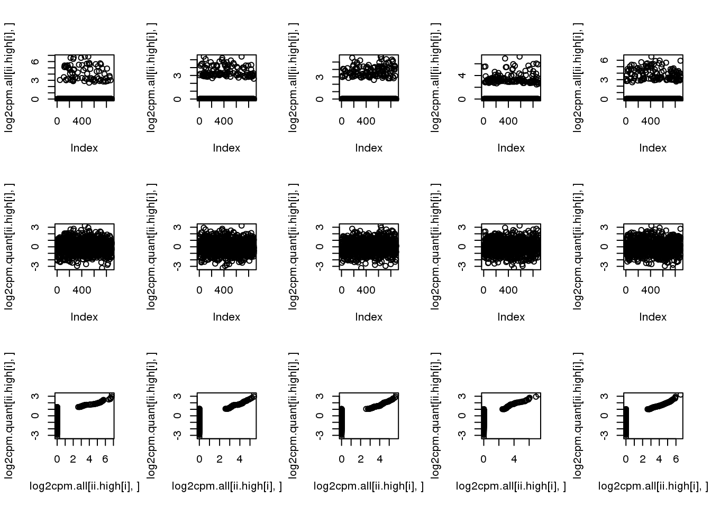
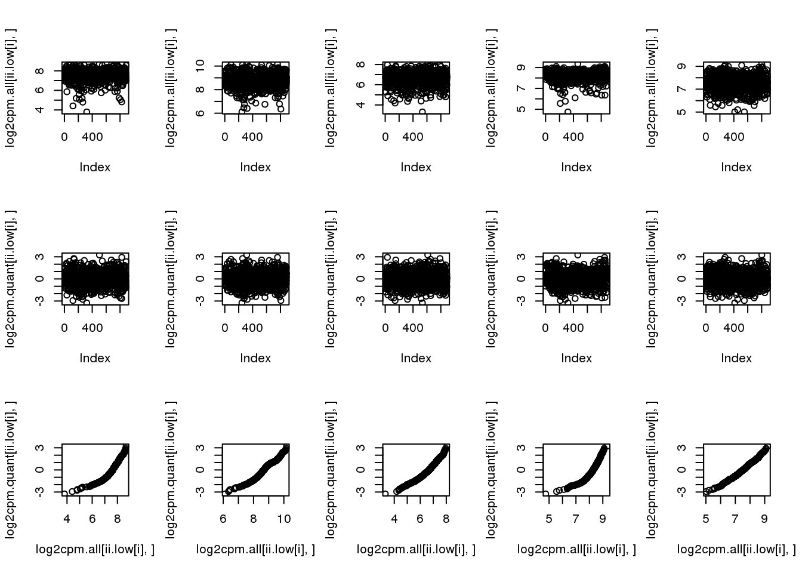
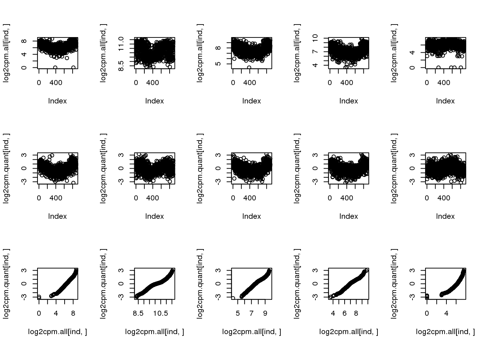
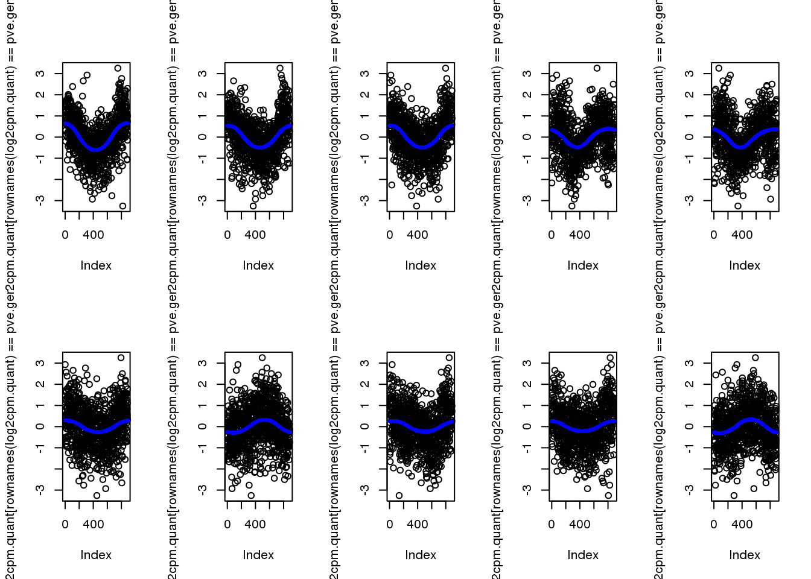
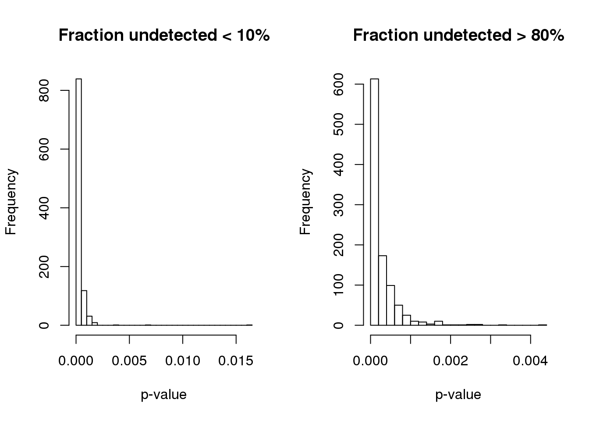
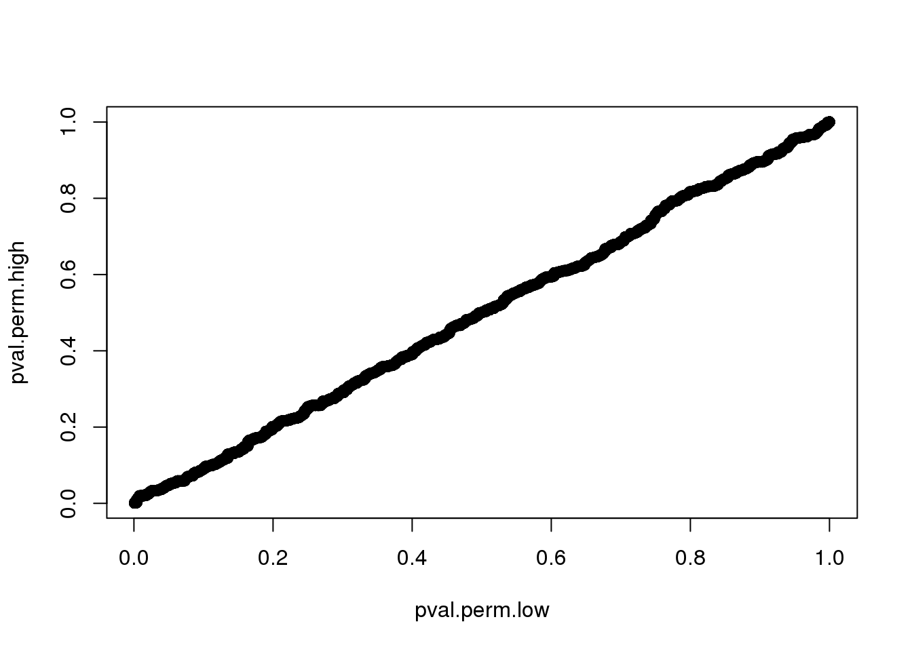
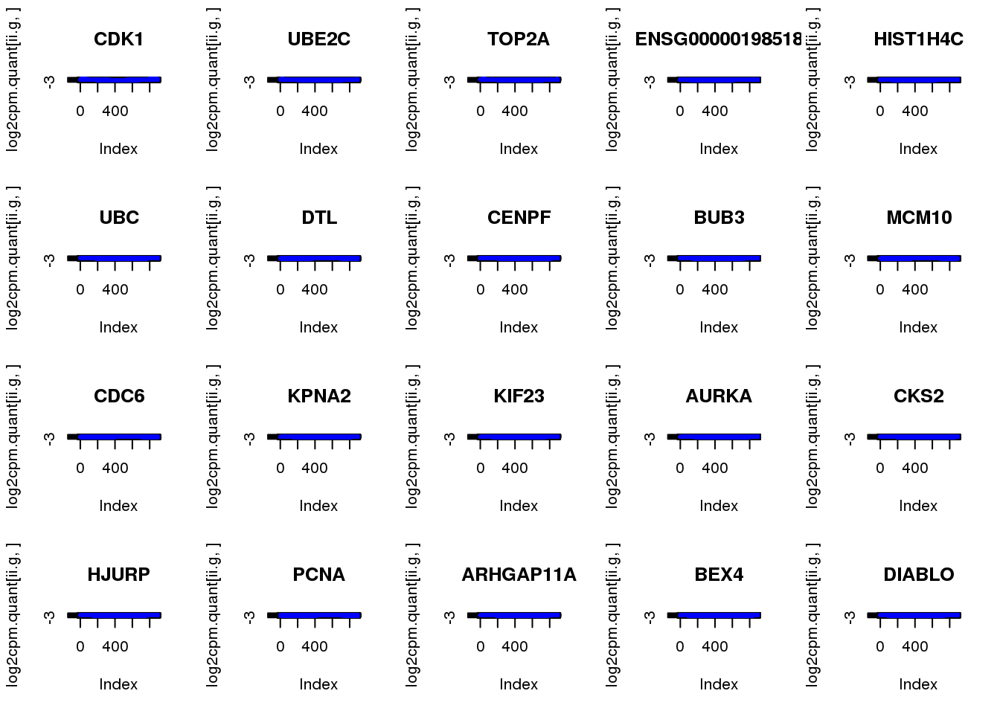

Last updated: 2018-05-08
Code version: 85120ce
Packages
library(circular)
library(conicfit)
library(Biobase)
library(dplyr)
library(matrixStats)
library(NPCirc)
library(smashr)
library(genlasso)Load data
df <- readRDS(file="../data/eset-final.rds")
pdata <- pData(df)
fdata <- fData(df)
# select endogeneous genes
counts <- exprs(df)[grep("ENSG", rownames(df)), ]
log2cpm.all <- t(log2(1+(10^6)*(t(counts)/pdata$molecules)))
macosko <- readRDS("../data/cellcycle-genes-previous-studies/rds/macosko-2015.rds")
log2cpm.all <- log2cpm.all[,order(pdata$theta)]
pdata <- pdata[order(pdata$theta),]
source("../code/utility.R")
source("../code/npreg/npreg.methods.R")–
Map log2cpm expression to standard normal distribution. The transformation is non-linear. Sort N expression values from the largest to the smalles. General N standard normal random variable. For the non-zero expression value, find the correspnoding standard normal random variable that has the same quantile and subsitute the value with the corresponding normal random variable value. We then find the stanadard normal random variable values correspond to non-zero expression values and randomly assign these non-zero expression values to a standard normal random variable value.
For genes with relatively low fraction of deteted cells, this method allows to move the zero expression values closer to the non-zero expression value.
For genes with high fraction of undetected cells, this method creates a
log2cpm.quant <- do.call(rbind, mclapply(1:nrow(log2cpm.all), function(g) {
yy <- log2cpm.all[g,]
is.zero <- which(yy == 0)
qq.map <- qqnorm(yy)
yy.qq <- qq.map$x
yy.qq[is.zero] <- sample(qq.map$x[is.zero])
return(yy.qq)
}, mc.cores=8) )
rownames(log2cpm.quant) <- rownames(log2cpm.all)
saveRDS(log2cpm.quant, file = "../output/npreg-trendfilter-quantile.Rmd/log2cpm.quant.rds")check genes with low/high fraction of undetected cells.
log2cpm.quant <- readRDS("../output/npreg-trendfilter-quantile.Rmd/log2cpm.quant.rds")
ii.high <- order(rowMeans(log2cpm.all > 0), decreasing = F)[1:5]
par(mfcol=c(3,5))
for (i in 1:5) {
plot(log2cpm.all[ii.high[i],])
plot(log2cpm.quant[ii.high[i],])
plot(log2cpm.all[ii.high[i],], log2cpm.quant[ii.high[i],])
}
ii.low <- order(rowMeans(log2cpm.all > 0), decreasing = T)[1:5]
par(mfcol=c(3,5))
for (i in 1:5) {
plot(log2cpm.all[ii.low[i],])
plot(log2cpm.quant[ii.low[i],])
plot(log2cpm.all[ii.low[i],], log2cpm.quant[ii.low[i],])
}
Check genes that we previously found to have cyclical patterns. This doesn’t distor genes previously found to have cyclical patterns.
cyclegenes <- readRDS("../output/npreg-methods.Rmd/cyclegenes.rds")
par(mfcol=c(3,5))
for (gene in colnames(cyclegenes)[2:6]) {
ind <- rownames(log2cpm.all) == gene
plot(log2cpm.all[ind,])
plot(log2cpm.quant[ind,])
plot(log2cpm.all[ind,], log2cpm.quant[ind,])
}
sbatch code/npreg-trendfilter-quantile.Rmd trendfilter.1.sh
sbatch code/npreg-trendfilter-quantile.Rmd trendfilter.2.sh
sbatch code/npreg-trendfilter-quantile.Rmd trendfilter.3.sh
sbatch code/npreg-trendfilter-quantile.Rmd trendfilter.4.sh
sbatch code/npreg-trendfilter-quantile.Rmd trendfilter.5.sh
Split the data to five chunks by genes and submit the chunks to independent batch jobs.
log2cpm.quant <- readRDS("../output/npreg-trendfilter-quantile.Rmd/log2cpm.quant.rds")
saveRDS(log2cpm.quant[1:2200,],
"../output/npreg-trendfilter-quantile.Rmd/log2cpm.quant.1.rds")
saveRDS(log2cpm.quant[2201:4400,],
"../output/npreg-trendfilter-quantile.Rmd/log2cpm.quant.2.rds")
saveRDS(log2cpm.quant[4401:6600,],
"../output/npreg-trendfilter-quantile.Rmd/log2cpm.quant.3.rds")
saveRDS(log2cpm.quant[6601:8800,],
"../output/npreg-trendfilter-quantile.Rmd/log2cpm.quant.4.rds")
saveRDS(log2cpm.quant[8801:11040,],
"../output/npreg-trendfilter-quantile.Rmd/log2cpm.quant.5.rds")
fit.quant.1 <- readRDS("../output/npreg-trendfilter-quantile.Rmd/fit.trend.quant.1.rds")
fit.quant.2 <- readRDS("../output/npreg-trendfilter-quantile.Rmd/fit.trend.quant.2.rds")
fit.quant.3 <- readRDS("../output/npreg-trendfilter-quantile.Rmd/fit.trend.quant.3.rds")
fit.quant.4 <- readRDS("../output/npreg-trendfilter-quantile.Rmd/fit.trend.quant.4.rds")
fit.quant.5 <- readRDS("../output/npreg-trendfilter-quantile.Rmd/fit.trend.quant.5.rds")
fit.quant <- c(fit.quant.1,fit.quant.2,fit.quant.3,fit.quant.4,fit.quant.5)
saveRDS(fit.quant,
"../output/npreg-trendfilter-quantile.Rmd/fit.quant.rds")consider PVE
fit.quant <- readRDS("../output/npreg-trendfilter-quantile.Rmd/fit.quant.rds")
pve <- sapply(fit.quant, "[[", "trend.pve")
summary(pve) Min. 1st Qu. Median Mean 3rd Qu. Max.
-0.0043839 0.0000798 0.0002166 0.0008961 0.0004973 0.3266288 select genes with the highest PVE
pve.genes <- names(pve)[order(c(pve), decreasing = T)[1:10]]plot top 10
par(mfrow=c(2,5))
for (g in 1:length(pve.genes)) {
ii.g <- which(names(fit.quant)==pve.genes[g])
plot(log2cpm.quant[rownames(log2cpm.quant)==pve.genes[g]])
points(fit.quant[[ii.g]]$trend.yy, pch=16, col = "blue", cex=.7)
}
quickily check top 100 enrichment for cell cycle genes.
enrich.order <- function(cutoffs, metrics, cyclegenes, allgenes) {
# out <- order(mad.ratio$smash.mad.ratio)
# cutoffs <- c(100, 200, 300)
cycle.rich <- sapply(cutoffs, function(x) {
which_top <- order(metrics, decreasing = T)[1:x]
sig.cycle <- sum(allgenes[which_top] %in% cyclegenes)/x
non.cycle <- sum(allgenes[-which_top] %in% cyclegenes)/(length(allgenes)-x)
cbind(as.numeric(sum(allgenes[which_top] %in% cyclegenes)),
sig.cycle/non.cycle)
})
colnames(cycle.rich) <- cutoffs
rownames(cycle.rich) <- c("nsig.genes.cycle", "fold.sig.vs.nonsig.cycle")
cycle.rich
}
enrich.order(cutoffs = c(100, 200, 300),
metrics = pve, cyclegenes = macosko$ensembl,
allgenes = rownames(log2cpm.quant)) 100 200 300
nsig.genes.cycle 54.00000 73.000000 86.00
fold.sig.vs.nonsig.cycle 12.78701 8.931377 7.16Consider two genes, one with large fraction of undetected cells and one with small fraction of undeteted cells. See if the null distribution is similar.
sbatch code/npreg-trendfilter-quantile.Rmd trendfilter.perm.lowmisss.sh
sbatch code/npreg-trendfilter-quantile.Rmd trendfilter.perm.highmisss.sh
perm.lowmiss <- readRDS("../output/npreg-trendfilter-quantile.Rmd/fit.trend.perm.lowmiss.rds")
perm.highmiss <- readRDS("../output/npreg-trendfilter-quantile.Rmd/fit.trend.perm.highmiss.rds")
pve.perm.lowmiss <- sapply(perm.lowmiss, "[[", "trend.pve")
pve.perm.highmiss <- sapply(perm.highmiss, "[[", "trend.pve")
summary(pve.perm.lowmiss) Min. 1st Qu. Median Mean 3rd Qu. Max.
3.700e-08 4.998e-05 1.388e-04 2.821e-04 3.382e-04 1.617e-02 summary(pve.perm.highmiss) Min. 1st Qu. Median Mean 3rd Qu. Max.
1.340e-07 5.089e-05 1.389e-04 2.664e-04 3.403e-04 4.214e-03 Turns out the p-value based on permuted data is not the same for genes with low and high fraction of undetected cells.
par(mfrow=c(1,2))
hist(pve.perm.lowmiss, nclass=30,
main = "Fraction undetected < 10%", xlab = "p-value")
hist(pve.perm.highmiss, nclass=30,
main = "Fraction undetected > 80%", xlab = "p-value")
Compute p-value based on two different distributions. High consistency between the two.
B <- length(pve.perm.lowmiss)
pval.perm.low <- sapply(fit.quant, function(x) (1+sum(pve.perm.lowmiss > x$trend.pve))/(1+B))
pval.perm.high <- sapply(fit.quant, function(x) (1+sum(pve.perm.highmiss > x$trend.pve))/(1+B))
summary(pval.perm.low) Min. 1st Qu. Median Mean 3rd Qu. Max.
0.000999 0.163836 0.365634 0.415336 0.648352 1.000000 summary(pval.perm.high) Min. 1st Qu. Median Mean 3rd Qu. Max.
0.000999 0.150849 0.360639 0.411520 0.630370 1.000000 plot(pval.perm.low, pval.perm.high)
sum(pval.perm.high < .001)[1] 278sum(pval.perm.low < .001)[1] 101use permutated distribution based data with low missing value. more conservative
which.sig <- pval.perm.low < .001
enrich.sigval <- function(cutoffs, metrics, cyclegenes, allgenes) {
# out <- order(mad.ratio$smash.mad.ratio)
# cutoffs <- c(100, 200, 300)
cycle.rich <- sapply(cutoffs, function(x) {
#which_top <- order(metrics, decreasing = T)[1:x]
sig.cycle <- sum(allgenes[metrics < x] %in% cyclegenes)/sum(metrics < x)
non.cycle <- sum(allgenes[metrics > x] %in% cyclegenes)/sum(metrics > x)
cbind(sum(metrics < x), as.numeric(sum(allgenes[metrics < x] %in% cyclegenes)),
sig.cycle/non.cycle)
})
colnames(cycle.rich) <- cutoffs
rownames(cycle.rich) <- c("nsig.genes", "nsig.genes.cycle", "fold.sig.vs.nonsig.cycle")
cycle.rich
}
enrich.sigval(cutoffs = c(.001, .005, .01), metrics=pval.perm.low,
cyclegenes = macosko$ensembl,
allgenes = rownames(log2cpm.quant)) 0.001 0.005 0.01
nsig.genes 101.00000 476.000000 553.000000
nsig.genes.cycle 54.00000 99.000000 99.000000
fold.sig.vs.nonsig.cycle 12.65925 5.268908 4.502205out.stats <- data.frame(pve=sapply(fit.quant, "[[", "trend.pve"),
pval.perm=pval.perm.low,
row.names = rownames(log2cpm.quant))
out.stats.ordered <- out.stats[order(out.stats$pve, decreasing = T),]
out.stats.ordered.sig <- out.stats.ordered[out.stats.ordered$pval.perm < .001,]
library(biomaRt)
ensembl <- useMart(biomart = "ensembl", dataset = "hsapiens_gene_ensembl")
symbols <- getBM(attributes = c("hgnc_symbol",'ensembl_gene_id'),
filters = c('ensembl_gene_id'),
values = rownames(out.stats.ordered.sig),
mart = ensembl)
out.stats.ordered.sig$symbols <- symbols$hgnc_symbol[match(rownames(out.stats.ordered.sig),
symbols$ensembl_gene_id)]
out.stats.ordered.sig$symbols[is.na(out.stats.ordered.sig$symbols)] <- rownames(out.stats.ordered.sig)[is.na(out.stats.ordered.sig$symbols)]
sig.genes <- rownames(out.stats.ordered.sig)
par(mfrow=c(4,5))
for (g in 1:20) {
ii.g <- which(rownames(log2cpm.quant) == sig.genes[g])
plot(log2cpm.quant[ii.g,],
main=out.stats.ordered.sig$symbols[g])
points(fit.quant[[ii.g]]$trend.yy, col = "blue", pch=16, cex=.7)
}
saveRDS(out.stats.ordered.sig,
"../output/npreg-trendfilter-quantile.Rmd/out.stats.ordered.sig.rds")
saveRDS(out.stats,
"../output/npreg-trendfilter-quantile.Rmd/quant.stats.rds")
write.table(rownames(out.stats.ordered.sig),
quote = F, col.names = F, row.names = F,
file = "../output/npreg-trendfilter-quantile.Rmd/siggens.txt")sessionInfo()R version 3.4.1 (2017-06-30)
Platform: x86_64-redhat-linux-gnu (64-bit)
Running under: Scientific Linux 7.2 (Nitrogen)
Matrix products: default
BLAS/LAPACK: /usr/lib64/R/lib/libRblas.so
locale:
[1] LC_CTYPE=en_US.UTF-8 LC_NUMERIC=C
[3] LC_TIME=en_US.UTF-8 LC_COLLATE=en_US.UTF-8
[5] LC_MONETARY=en_US.UTF-8 LC_MESSAGES=en_US.UTF-8
[7] LC_PAPER=en_US.UTF-8 LC_NAME=C
[9] LC_ADDRESS=C LC_TELEPHONE=C
[11] LC_MEASUREMENT=en_US.UTF-8 LC_IDENTIFICATION=C
attached base packages:
[1] parallel stats graphics grDevices utils datasets methods
[8] base
other attached packages:
[1] biomaRt_2.34.2 genlasso_1.3 igraph_1.2.1
[4] smashr_1.1-0 caTools_1.17.1 data.table_1.10.4-3
[7] Matrix_1.2-10 wavethresh_4.6.8 MASS_7.3-47
[10] ashr_2.2-7 Rcpp_0.12.16 NPCirc_2.0.1
[13] matrixStats_0.53.1 dplyr_0.7.4 Biobase_2.38.0
[16] BiocGenerics_0.24.0 conicfit_1.0.4 geigen_2.1
[19] pracma_2.1.4 circular_0.4-93
loaded via a namespace (and not attached):
[1] httr_1.3.1 bit64_0.9-7 jsonlite_1.5
[4] foreach_1.4.4 shiny_1.0.5 assertthat_0.2.0
[7] stats4_3.4.1 blob_1.1.0 yaml_2.1.18
[10] progress_1.1.2 slam_0.1-42 pillar_1.2.1
[13] RSQLite_2.0 backports_1.1.2 lattice_0.20-35
[16] glue_1.2.0 digest_0.6.15 htmltools_0.3.6
[19] httpuv_1.3.6.2 XML_3.98-1.10 pkgconfig_2.0.1
[22] misc3d_0.8-4 xtable_1.8-2 mvtnorm_1.0-7
[25] git2r_0.21.0 tibble_1.4.2 IRanges_2.12.0
[28] movMF_0.2-2 magrittr_1.5 mime_0.5
[31] memoise_1.1.0 evaluate_0.10.1 doParallel_1.0.11
[34] truncnorm_1.0-8 tools_3.4.1 prettyunits_1.0.2
[37] stringr_1.3.0 S4Vectors_0.16.0 plotrix_3.7
[40] AnnotationDbi_1.40.0 bindrcpp_0.2 compiler_3.4.1
[43] rlang_0.2.0 grid_3.4.1 RCurl_1.95-4.10
[46] iterators_1.0.9 htmlwidgets_1.0 crosstalk_1.0.0
[49] bitops_1.0-6 rmarkdown_1.9 boot_1.3-19
[52] codetools_0.2-15 curl_3.1 DBI_0.8
[55] R6_2.2.2 knitr_1.20 bit_1.1-12
[58] bindr_0.1.1 rprojroot_1.3-2 shape_1.4.4
[61] stringi_1.1.7 pscl_1.5.2 SQUAREM_2017.10-1 This R Markdown site was created with workflowr